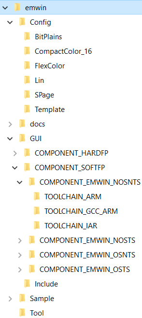

emWin is an embedded graphic library and graphical user interface (GUI) framework. It provides an efficient, processor- and display- controller-independent GUI for any application that operates with a graphical display including home appliances, automotive, IoT, and industrial. It is compatible with single-task and multi-task environments. Developed by SEGGER Microcontroller, emWin is extremely popular in the embedded industry. Cypress has licensed the emWin library from SEGGER and offers it for free to its customers.
Features:
- 2-D Graphics Library
- Displaying bitmap files
- Fonts
- Memory Devices
- Multi-task (RTOS)
- Window Manager
- Window Objects (Widgets)
- Virtual Screens / Virtual Pages
- Pointer Input Devices
- Touch screen support (user defined)
- Sprites and Cursors
- Anti-aliasing
- Language Support
- Multi-codepages support
- Unicode support
- Right-to-left and bidirectional text support
- Display Drivers
- BitPlains
- CompactColor_16
- FlexColor
- Lin
- SPage
- Template
- PC Tools to support emWin GUI development (such as Bitmap Converter and GUIBuilder)
- Toolchains
- GNU Arm Embedded v7
- Arm Compiler v6
- IAR v8
General Description
Include GUI.h to access all the functions and other declarations in this library. Quick Start Guide is offered in this API Reference Guide.
For compatibility information, refer to Supported Software and Tools.
For differences between the middleware versions, refer to Changelog.
Also, Changelog describes the impact of the changes to your code.
The emWin library consists of the two major parts:
- emWin GUI Framework
- emWin Display Drivers
The GUI framework provides a display-independent API intended to work with graphics (drawing and moving windows on the display, animation, 2D graphics) and to process data from input devices (touch pads, buttons, etc...).
Display Drivers implements the abstraction layer between the GUI framework and display controllers. For a list of display controllers supported by each driver, refer to Supported Display Drivers. All drivers require the application layer functionality that implements communication with the physical display controller through a supported communication interface (I2C, SPI parallel ,etc...). For more detail, refer to the Display Driver Configuration section. The figure below shows how the emWin graphics library integrates into a PSoC® and 6 MCU project.
The emWin API is described in emWin User Guide.
emWin Package Structure
Cypress distributes emWin as a set of static libraries. The middleware package does not contain the emWin source code. The table below lists the following items:

|
| Directory | Description |
| Config | Contains the pre-customized emWin GUI Framework and Display Drivers configuration files. A full set of configuration files for each supported driver are stored in separate sub-folders (BitPlains, CompactColor_16, etc...). For information about all display drivers, included in the emWin package, distributed by Cypress, refer to the Supported Display Drivers section. These configuration files define the environment(MbedOS, FreeRTOS, BareMetal, etc...), selected display driver, and hardware interface with a display. |
| Config/MbedOS | Configuration files stored in this directory are intended to be used as part of an MbedOS-based application. For more detail, refer to the Configuration Considerations. |
| Config/ModusToolbox | Configuration files stored in this directory are intended to be used with ModusToolbox™ a development environment or any other third party tools, like Keil or IAR and can be executed either as part of the FreeRTOS application or as part of a BareMetal application. For more detail, refer to the Configuration Considerations. |
| docs | Contains the API Reference Guide and other supporting documentation. |
| GUI | Contains a set of static libraries, pre-compiled for different configurations of user applications (toolchain, FPU usage, OS usage, input device usage), and a set of header files, to provide an interface to the emWin functionality. For more detail, refer to the Configuration Considerations. |
| GUI/COMPONENT_SOFTFP | Contains a set of emWin static libraries compiled with different floating-point operations implementation options. Implementation of floating point operations corresponds to the name of the parent directory, later in the table referred as COMPONENT_<FP_OPTION>. For more usage detail, refer to the Configuration Considerations. |
| GUI/COMPONENT_HARDFP |
GUI/COMPONENT_<FP_OPTION>/
COMPONENT_EMWIN_NOSNTS | A set of static libraries with no multi-tasking and no touch support. There is a library for each supported toolchain in a separate folder:
- TOOLCHAIN_ARM - Stores the static library for the Arm Compiler.
- TOOLCHAIN_GCC_ARM - Stores the static library for the GCC compiler.
- TOOLCHAIN_IAR - Stores the static library for the IAR compiler.
|
GUI/COMPONENT_<FP_OPTION>/
COMPONENT_EMWIN_NOSTS | A set of static libraries with no multitasking support but with touch support. This directory has the same structure as the COMPONENT_EMWIN_NOSNTS directory. |
GUI/COMPONENT_<FP_OPTION>/
COMPONENT_EMWIN_OSNTS | A set of static libraries with multitasking support but without the touch support. This directory has the same structure as the COMPONENT_EMWIN_NOSNTS directory. |
GUI/COMPONENT_<FP_OPTION>/
COMPONENT_EMWIN_OSTS | A set of static libraries with multitasking support and with the touch support. This directory has the same structure as the COMPONENT_EMWIN_NOSNTS directory. |
| GUI/Include | Contains a set of header files to provide an interface to the emWin functionality. |
| Sample | Contains an application program showing many emWin features. All examples are also available at www.segger.com/emwin-samples.html For usage details, refer to Quick Start Guide. |
| Tool | Contains emWin PC tools to support emWin GUI development. Included tools:
- Bin2C
- Bitmap Converter
- emWinPlayer
- emWinViever
- GUIBuilder
- JPEG2Movie
- U2C
For tools usage instructions, refer to emWin User Guide
|
|
Supported Display Drivers
| Driver | Supported display controller / Purpose of driver | Supported bits/pixel |
| GUIDRV_BitPlains | This driver can be used for solutions without a display controller. It manages separate bit-plains for each color bit. This driver does not have any display-controller-specific code and can be used for solutions that require color bits in separate plains. | 1 - 8 |
| GUIDRV_CompactColor_16 | Ampire: FSA506
Epson: S1D13742, S1D13743, S1D19122
FocalTech: FT1509
Himax: HX8301, HX8312A, HX8325A, HX8340, HX8347, HX8352, HX8352B, HX8353
Hitachi: HD66766, HD66772, HD66789
Ilitek: ILI9161, ILI9220, ILI9221, ILI9320, ILI9325, ILI9326, ILI9328, ILI9342, ILI9481
LG Electronics: LGDP4531, LGDP4551
MagnaChip: D54E4PA7551
Novatek: NT39122, NT7573
OriseTech: SPFD5408, SPFD54124C, SPFD5414D, SPFD5420A
Renesas: R61505, R61509, R61516, R61526, R61580, R63401
Samsung: S6D0110A, S6D0117, S6D0128, S6D0129, S6D04H0
Sharp: LCY-A06003, LR38825
Sitronix: ST7628, ST7637, ST7687, ST7712, ST7715, ST7735, ST7787, ST7789
Solomon: SSD1284, SSD1289, SSD1298, SSD1355, SSD1961, SSD1963, SSD2119
Toshiba: JBT6K71
| 16 |
| GUIDRV_FlexColor | Epson: S1D19122
FocalTech: FT1509
Himax: HX8353, HX8325A, HX8357, HX8340, HX8347, HX8352A, HX8352B, HX8301, HX8367, HX8369
Hitachi: HD66772
Ilitek: ILI9320, ILI9325, ILI9328, ILI9335, ILI9338, ILI9340, ILI9341, ILI9342, ILI9163, ILI9481, ILI9486, ILI9488, ILI9220, ILI9221
LG Electronics: LGDP4531, LGDP4551, LGDP4525
Lucid Display Technology: LDT7138 Novatek: NT39122
OriseTech: SPFD5408, SPFD54124C, SPFD5414D
Raio: RA8870, RA8875
Renesas: R61505, R61516, R61526, R61580
Samsung: S6E63D6, S6D0117
Sitronix: ST7628, ST7637, ST7687, ST7735, ST7712, ST7775, ST7715, ST7789, ST7796
Solomon: SSD1284, SSD1289, SSD1298, SSD1355, SSD2119, SSD1963, SSD1961, SSD1351, SSD1353
Syncoam: SEPS525
| 16, 18 |
| GUIDRV_Lin | This driver can be used for display controllers with linear addressable video memory and direct interface. This driver does not have any display-controller-specific code. | 1, 2, 4, 8, 16, 24, 32 |
| GUIDRV_SPage | Avant Electronics: SBN0064G
Epson: S1D15605, S1D15606, S1D15607, S1D15608, S1D15705, S1D15710, S1D15714, S1D15E05, S1D15E06, S1D15719, S1D15721
Hitachi: HD61202
Integrated Solutions Technology: IST3020, IST3501
New Japan Radio Company: NJU6676
Novatek: NT7502, NT7534, NT7538, NT75451
OriseTech: SPLC502B
Samsung: S6B0108 (KS0108), S6B0713, S6B0719, S6B0724, S6B1713
Sino Wealth: SH1101A
Sitronix: ST7522, ST75256, ST75320, ST7565, ST7567, ST7570, ST7591
Solomon: SSD1303, SSD1305, SSD1306, SSD1309, SSD1805, SSD1815, SSD1821
Sunplus: SPLC501C
UltraChip: UC1601, UC1606, UC1608, UC1610, UC1611, UC1628, UC1638, UC1701
| 1, 2, 4 |
| GUIDRV_Template | The driver template. Can be used as a starting point for writing a new custom display driver. | 1, 2, 4, 8, 16, 24, 32 |
For details on each driver, refer to section Detailed display driver descriptions on page 1186 of emWin User Guide.
Quick Start Guide
Cypress emWin middleware can be used in various Development Environments such as ModusToolbox, Mbed, etc. For more detail, refer to the Supported Software and Tools. The quickest way to get started is using Code Examples. Cypress continuously extends its portfolio of code examples at the Cypress Semiconductor website and at the Cypress Semiconductor GitHub.
This quick start guide assumes that the environment is configured to use the PSoC 6 Peripheral Driver Library(psoc6pdl) for development and the PSoC 6 Peripheral Driver Library(psoc6pdl) is included in the project.
Create and run first emWin project
This section provides the step-by-step instructions how to implement a simple "Hello World" application using emWin. The project requirements are listed below:
- Target display: The console on the user PC
- Desired display resolution: 80x20 pixels
- Color depth: 1 bit per pixel
- No multitasking support
- No touch screen support
The following steps are required:
- Add emWin to the project.
- For ModusToolbox, add emWin to the project using the Middleware selector.
- For MbedOS, add emWin using the following command
mbed add <link to the emWin repository>
- Configure the project to use the EMWIN_NOSNTS option, because multitasking and touch support is not required.
- For ModusToolbox, update the project's Makefile with the selected emWin option.
- For MbedOS, add the selected emWin core option to mbed_app.json using the target.components_add command in the "target_overrides" section.
{
"target_overrides": {
"*":{
"target.components_add": ["EMWIN_NOSNTS"]
}
}
}
Create an emwin-config folder in the root of the project and copy the BitPlains driver configuration files to this folder.
- If ModusToolbox or a third-party IDE is used, copy the following files:
- emWin/Config/ModusToolbox/BitPlains/GUI_X.c
- emWin/Config/ModusToolbox/BitPlains/GUIConf.c
- emWin/Config/ModusToolbox/BitPlains/LCDConf.c
- emWin/Config/ModusToolbox/BitPlains/LCDConf.h
- If Mbed is used, copy the following files:
- emWin/Config/MbedOS/BitPlains/GUI_X_Mbed.cpp
- emWin/Config/MbedOS/BitPlains/GUIConf.cpp
- emWin/Config/MbedOS/BitPlains/LCDConf.cpp
- emWin/Config/MbedOS/BitPlains/LCDConf.h
For more details, refer to the Project Configuration section.
- Update the main.c/main.cpp with following includes:
#include "cy_pdl.h"
#include "GUI.h"
#include "LCDConf.h"
- Note
- For MbedOS, also include mbed.h.
- Build the project. Compilation should be successful. Fix the compilation issues, if any, before moving to the next step.
- Implement the STDOUT re-target to UART to enable the usage of the printf() function. This step is not required if Mbed is used as the Development Environment because the STDOUT re-target is already implemented on the MbedOS layer.
- Configure the display driver - edit emWin config files in the previously created emwin-config folder:
- LCDConf.c/LCDConf.cpp:
- Set the physical display size to 80x20. In the emwin-config folder, update the XSIZE_PHYS/YSIZE_PHYS defines in the LCDConf.c/LCDConf.cpp as following:
#define XSIZE_PHYS 80
#define YSIZE_PHYS 20
- Add a routine to convert the display buffer to the ASCII pseudo-graphics. The code is provided below:
#define TEXT_BUFFER_SIZE (((XSIZE_PHYS + 2u) * YSIZE_PHYS) + 2u)
char * LCD_ConvertToText(void)
{
int x = 0;
int y = 0;
U32 charIndex = 0;
static char textBuffer[TEXT_BUFFER_SIZE];
textBuffer[charIndex++] = 0x0Du;
for(y = 0; y < YSIZE_PHYS; y++)
{
for(x = 0; x < XSIZE_PHYS; x++)
{
if((_aPlain_0[y * BYTES_PER_LINE + x/8] & (0x01u << (x % 8))) != 0)
{
textBuffer[charIndex++] = '#';
}
else
{
textBuffer[charIndex++] = ' ';
}
}
textBuffer[charIndex++] = 0x0Du;
textBuffer[charIndex++] = 0x0Au;
}
textBuffer[charIndex++] = 0x00u;
return(textBuffer);
}
- LCDConf.h: Update the file with the LCD_ConvertToText() function prototype.
char * LCD_ConvertToText(void);
- Update the main() routine with the following code:
GUI_Init();
GUI_Clear();
GUI_DispStringAt("Hello World!", 5, 2);
GUI_DrawRect(0, 0, LCD_GetXSize() - 1, LCD_GetYSize() - 1);
printf(LCD_ConvertToText());
while(1)
{
}
- Build the application and program it into the target kit.
- Launch the terminal on your PC and set the following configuration:
- Window size: 80x24
- Auto line-wrap: Disabled (or the set window width is more than 80 symbols if there is no possibility to disable the auto line-wrap for the used terminal)
- Press the Reset button on the kit and observe the pseudo-graphical text in the terminal window:
Run emWin examples and demos
SEGGER provides many code examples to demonstrate various features of emWin. These examples can be found in the Sample/Tutorial directory or on the SEGGER web page.
Perform the following steps to run any demo:
- Set-up emWin as described in the Configuration Considerations section.
- Add one of the demo sample files to your project.
- Configure emWin as described in the section above.
- Edit the main source file to include GUI.h and then call MainTask() as shown in the code that follows. All of the emWin examples use MainTask() as the entry point.
#include "GUI.h"
int main()
{
MainTask();
for(;;)
{
}
}
- Compile and run the project.
Configuration Considerations
The emWin middleware contains a set of display drivers that support a number of different displays that operate on the top of the physical communication interface driver (GPIO, SCB, DMA, etc.) that is the part of the PSoC 6 Peripheral Driver Library (psoc6pdl). For a detailed list of display controllers supported by each driver, refer to Supported Display Drivers section. This Configuration Considerations section guides how to set up the emWin middleware.
- Note
- This section contains only basic configuration steps required to configure emWin. For detailed information on the emWin configuration, refer to emWin User Guide.
- Note
- The emWin middleware is not supported by the ModusToolbox Device Configurator Tool which is part of ModusToolbox. The emWin middleware must be configured manually.
Configuring the emWin library consists of two major parts:
- Project Configuration
- Display Driver Configuration
Project Configuration
The project configuration defines the set of configuration files and static libraries to be included in the project in order to adjust the emWin library according to the desired design requirements.
The required configuration steps are listed below:
- Add emWin to the project.
- For ModusToolbox, add emWin to the project using the Middleware selector.
- For MbedOS, add emWin using the following command
mbed add <link to the emWin repository>
Select and enable the emWin core option according to the project requirements. Available options:
- EMWIN_NOSNTS - No multitasking and no touch support.
- EMWIN_NOSTS - No multitasking support, touch support.
- EMWIN_OSNTS - Multitasking support, no touch support.
- EMWIN_OSTS - Multitasking and touch support.
To enable the selected core option in:
- ModusToolbox: Update the project's Makefile with the selected emWin option. The example below demonstrates how to select the EMWIN_NOSNTS option.
- MbedOS: Add the selected emWin core option to mbed_app.json using the target.components_add command in the "target_overrides" section. The example below demonstrates how to select the EMWIN_NOSNTS option.
{
"target_overrides": {
"*":{
"target.components_add": ["EMWIN_NOSNTS"]
}
}
}
- Other development environment: Update the project settings to add the following paths:
- Add the "emWin/GUI/Include" catalog to the Include paths
- Add the "emWin/GUI/COMPONENT_<SELECTED_FPU_OPTION>/COMPONENT_<SELECTED_CORE_OPTION>" catalog to the Include paths
- Set up the linking of the library placed under the emWin/GUI/COMPONENT_<SELECTED_FPU_OPTION> /COMPONENT_<SELECTED_CORE_OPTION>/TOOLCHAIN_<SELECTED_TOOLCHAIN> catalog. SELECTED_TOOLCHAIN defines the toolchain used to build the project. The current version of the emWin library supports the following toolchains:
- ARM - Arm Compiler 6 is used
- GCC_ARM - GCC Compiler is used
- IAR - IAR Compiler is used
- Select the display driver that supports the display controller used in the design. For information on display drivers and display controllers, supported by the emWin library, refer to the Supported Display Drivers section.
Copy the required emWin config files to the project. These files are typically edited for a specific project, so Cypress recommends you copy the files into the separate emWin config folder in the root of your project. Depending on the selected development flow, go to emWin/Config/<MbedOS or ModusToolbox>/<Selected Display Driver> and copy the folder content to the previously created emWin config folder.
- For Mbed, copy all the files from the emWin/Config/MbedOS/<Selected Display Driver> folder.
- For ModusToolbox and other development environments, copy the files from the emWin/Config/ModusToolbox/<Selected Display Driver> folder, but select only one of the GUI_X files depending on the OS being used.
In the selected folder, you find the following files:
| Configuration file | Purpose |
GUI_X.c or GUI_X.cpp
GUI_X_<OS_Name>.c or GUI_X_<OS_Name>.cpp | Contains a definition of the emWin timing routines and the kernel interface routines if RTOS is used. Depending on the RTOS used in the project, only one corresponding GUI_X_<OS_Name> file must be selected. If no is RTOS used, select the GUI_X.c file. |
| GUIConf.c or GUIConf.cpp | Configures available for emWin the RAM block and sets its size. This block is managed by the internal memory management system to allocate internal emWin data. |
| LCDConf.c or LCDConf.cpp | Configures the display driver parameters such as the size, color conversion, driver callback functions, hardware interface functions, etc. |
| LCDConf.h | The configuration of the used display driver(s). |
- Note
- In FreeRTOS, emWin uses mutex resource for multitasking support. To enable FreeRTOS mutex support, set configUSE_MUTEXES to 1 in the FreeRTOSConfig.h file.
Also, depending on the driver, you may find the following driver-specific files:
| Configuration file | Purpose |
| LCDConf_CompactColor_16.h | The specific configuration file for the CompactColor_16 driver. Defines configurations such as the display controller, data bus width, display mirroring options, and display hardware-access functions. |
GUIDRV_CompactColor_16.c
GUIDRV_CompactColor_16.h | The CompactColor_16 display driver files. Do not modify! |
GUIDRV_Template.c
GUIDRV_Template.h | The display driver template files. Can be used as a starting point for custom display driver implementation. |
| LCDConf.h | The configuration of the used display driver(s). |
For the application layer code required to set up emWin and display data, refer to the Create and run first emWin project section
Display Driver Configuration
The drivers can be configured by modifying the emWin configuration files which contain all required information for the driver including the display- controller hardware interface. The display driver configuration includes the following steps:
- Create a driver instance, set up the color conversion routines and link them to the desired layer.
- Configure the display physical size.
- Configure the display data RAM.
- Configure the access to the display hardware.
- Configure the driver specific functions, if any.
- Update the LCD_X_DisplayDriver() callback function to handle all required commands from the driver.
The drivers, included in the emWin package distributed by Cypress are listed in the Supported Display Drivers section.
The following sections describe the steps required to configure each of the supported drivers:
BitPlains Driver
This section documents the main steps required to configure the BitPlains driver.
The configuration explanation is based on the pre-customized files that are part of the emWin library and available in the Config/MbedOS/BitPlains or Config/ModusToolbox/BitPlains catalog.
The LCD_X_Config() routine in the LCDConf.c/LCDConf.cpp files should implement the following functionality:
- Create a GUIDRV_BitPlains driver instance with the desired palette and link it to the desired layer. The pre-customized LCDConf.c/LCDConf.cpp files implements creating of the GUIDRV_BitPlains driver instance witch the GUICC_1 (1-bpp black and white) palette and link it to the 1-st layer. See the corresponding code below:
#define COLOR_CONVERSION GUICC_1
GUI_DEVICE_CreateAndLink(GUIDRV_BITPLAINS, COLOR_CONVERSION, 0, 0);
- Configure the physical display size with the desired value. The pre-customized LCDConf.c/LCDConf.cpp files have configured physical display size with the default value 320x240 pixels. See the corresponding code below:
#define XSIZE_PHYS 240
#define YSIZE_PHYS 320
if (LCD_GetSwapXY())
{
LCD_SetSizeEx (0, YSIZE_PHYS, XSIZE_PHYS);
LCD_SetVSizeEx(0, YSIZE_PHYS, XSIZE_PHYS);
}
else
{
LCD_SetSizeEx (0, XSIZE_PHYS, YSIZE_PHYS);
LCD_SetVSizeEx(0, XSIZE_PHYS, YSIZE_PHYS);
}
Configure the display data RAM for the desired layer. The pre-customized LCDConf.c/LCDConf.cpp files have configured display data RAM for the 1-st layer to store a 1-bpp black-and- white picture with the 240x320 pixels resolution. See the corresponding code below.
Memory buffer allocation:
#define XSIZE_PHYS 240
#define YSIZE_PHYS 320
#define BYTES_PER_LINE ((XSIZE_PHYS + 7) / 8)
static U8 _aPlain_0[BYTES_PER_LINE * YSIZE_PHYS];
Display RAM data structure definition:
static struct {
U8 * apVRAM[8];
} _VRAM_Desc = {{
_aPlain_0,
}};
The apVRAM element is the array of pointers to the memory locations to be used by the driver for each bit plain. If the driver, for example, works in 1bpp mode, only the first 1 pointer is used (One plain for each bit of the color information).
Display RAM address assignment:
LCD_SetVRAMAddrEx(0, (void *)&_VRAM_Desc);
The user can configure a required memory layout by allocating the necessary number of _aPlain arrays and adding them to the _VRAM_Desc structure. The example of the memory layout for GUICC_M111 (3-bpp, 8 colors) is provided below:
static U8 _aPlain_0[BYTES_PER_LINE * YSIZE_PHYS];
static U8 _aPlain_1[BYTES_PER_LINE * YSIZE_PHYS];
static U8 _aPlain_2[BYTES_PER_LINE * YSIZE_PHYS];
static struct {
U8 * apVRAM[8];
} _VRAM_Desc = {
_aPlain_0,
_aPlain_1,
_aPlain_2,
};
It is also possible to add another user code if more configuration actions are required to achieve the desired parameters. For other configuration options of the BitPlains driver, refer to section Additional run-time configuration on page 1187 of emWin User Guide.
The LCD_X_DisplayDriver() routine implementation does not require any specific functionality in order to enable display operation with the parameters, set in scope of the LCD_X_Config() routine. The pre-customized LCDConf.c/LCDConf.cpp files implements the LCD_X_DisplayDriver() routine template. See the corresponding code below.
int LCD_X_DisplayDriver(unsigned LayerIndex, unsigned Cmd, void * pData)
{
int r;
GUI_USE_PARA(LayerIndex);
GUI_USE_PARA(pData);
switch (Cmd)
{
case LCD_X_INITCONTROLLER:
r = 0;
break;
default:
r = -1;
break;
}
return r;
}
You can update this template to process other supported commands if they are required by the target application. For the descriptions of all the supported commands, refer to section Commands passed to the callback function on page 1182 of emWin User Guide.
The BitPlains display driver does not have any display controller specific code, so the user is responsible for implementing the functionality intended to update the physical display according to the display RAM data (_VRAM_Desc structure). For a possible approach example, refer to the Create and run first emWin project section.
FlexColor Driver
This section documents the main steps required to configure the FlexColor driver.
The explanation is based on the pre-customized files that are the part of emWin library and placed in the Config/MbedOS/FlexColor or Config/ModusToolbox/FlexColor catalog.
The LCD_X_Config() routine in the LCDConf.c/LCDConf.cpp files should implement the following functionality:
Create the GUIDRV_FlexColor driver instance with the desired palette and link it to the desired layer. The pre-customized LCDConf.c/LCDConf.cpp files implements creation of the GUIDRV_FlexColor driver instance witch the GUICC_M565 (16 bpp, red and blue swapped) palette and link it to the 1-st layer. See the corresponding code below:
#define DISPLAY_DRIVER GUIDRV_FLEXCOLOR
#define COLOR_CONVERSION GUICC_M565
GUI_DEVICE * pDevice;
pDevice = GUI_DEVICE_CreateAndLink(DISPLAY_DRIVER, COLOR_CONVERSION, 0, 0);
The user can change COLOR_CONVERSION value to set up some other palette. For more information on palettes, refer to section Colors on page 1187 of emWin User Guide.
- Note
- In some cases, you may need to set a value of the Entry Mode register of the display controller for its configuration. The FlexColor driver writes data to the display controller Entry Mode register in order to set the display orientation, overwriting value, set during the display initialization. To set a desired value of other bits in the Entry Mode register, write the Entry Mode value into the RegEntryMode field of the CONFIG_FLEXCOLOR structure and then pass it as a parameter of the GUIDRV_FlexColor_Config() function. The driver will combine the desired value with the required orientation bit values during the initialization process:
CONFIG_FLEXCOLOR Config = {0};
Config.RegEntryMode = DESIRED_ENTRY_MODE_REG_VALUE;
GUIDRV_FlexColor_Config(pDevice, &Config);
- Configure the physical display size with the desired value. The pre-customized LCDConf.c/LCDConf.cpp files have configured the physical display size with the default value of 320x240 pixels. See the corresponding code below:
#define XSIZE_PHYS 240
#define YSIZE_PHYS 320
LCD_SetSizeEx (0, XSIZE_PHYS, YSIZE_PHYS);
LCD_SetVSizeEx(0, VXSIZE_PHYS, VYSIZE_PHYS);
- Configure the display data RAM for the desired layer. The FlexColor driver does not require allocation of the display data RAM buffer in scope of the LCDConf.c/LCDConf.cpp files. It uses the memory buffer allocated in the GUIConf.c/GUIConf.cpp files. The FlexColor display driver can be used with and without a display data cache that contains a complete copy of the content of the display data RAM in order to avoid reading operations from the display controller and increase the display performance. For details on the cache usage, refer to section GUIDRV_FlexColor on page 1193 of emWin User Guide.
Configure the display driver to work with the specified display controller. The pre-customized LCDConf.c/LCDConf.cpp files implements configuring the FlexColor display driver to work with the GUIDRV_FLEXCOLOR_F66709 controller set in the M16C0B8 (16bpp, no cache, 8 bit bus) operation mode. For a full list of supported display controllers, refer to the Supported Display Drivers section. See the corresponding code below:
GUI_PORT_API PortAPI = {0};
GUIDRV_FlexColor_SetFunc(pDevice, &PortAPI, GUIDRV_FLEXCOLOR_F66709, GUIDRV_FLEXCOLOR_M16C0B8);
You can configure the FlexColor display driver to work with any supported display controller in any supported operation mode by changing values of the #3 and #4 parameters of the the GUIDRV_FlexColor_SetFunc() function. For all permitted values for these parameters, refer to section GUIDRV_FlexColor_SetFunc() on page 1196 of the emWin User Guide for all permitted values for these parameters.
The provided template does not implement any hardware interface. The user is responsible for selecting the appropriate communication interface (I2C, SPI, GPIO, etc...) for the hardware interface implementation on the application layer and for the initialization of the corresponding fields of the PortAPI structure in scope of the LCD_X_Config() routine. The set of functions depends on the display controller operation mode. For example, if 16C0B8 (16bpp, no cache, 8 bit bus) is used, an 8-bit interface should be configured, if M16C0B16 (16bpp, no cache, 16 bit bus) is used then the 16-bit interface should be implemented and so on. For a description of each interface, refer to section Required GUI_PORT_API routines on page 1198.
It is also possible to add another user code if more configuration actions are required to achieve the desired parameters. For more information, refer to section Run-time configuration API on page 1194 of emWin User Guide.
The LCD_X_DisplayDriver() routine requires the LCD_X_INITCONTROLLER command implementation in order to enable the display operation with the parameters, set in scope of the LCD_X_Config() routine. The pre-customized LCDConf.c/LCDConf.cpp files implements the LCD_X_DisplayDriver() routine template with the call of the empty function to handle the LCD_X_INITCONTROLLER command. See the corresponding code below.
static void _InitController(void)
{
}
int LCD_X_DisplayDriver(unsigned LayerIndex, unsigned Cmd, void * pData)
{
int r;
GUI_USE_PARA(LayerIndex);
GUI_USE_PARA(pData);
switch (Cmd)
{
case LCD_X_INITCONTROLLER:
_InitController();
r = 0;
break;
default:
r = -1;
break;
}
return r;
}
The user is responsible for the _InitController() implementation with the initialization functionality for the used display controller. The user can also update this template to process any supported command if it is required by the target application. For the descriptions of all the supported commands, refer to the chapter Commands passed to the callback function on page 1182 of emWin User Guide.
Lin Driver
This section documents the main steps required to configure the Lin driver.
The explanation is based on the pre-customized files that are part of the emWin library and placed in the Config/MbedOS/Lin or Config/ModusToolbox/Lin catalog.
The LCD_X_Config() routine that is the part of LCDConf.c/LCDConf.cpp files should implement the following functionality:
- Create the GUIDRV_Lin driver instance with the desired display orientation, color depth, palette, and link it to the desired layer. The pre-customized LCDConf.c/LCDConf.cpp files implements creating of the GUIDRV_LIN_32 option of the GUIDRV_Lin driver. This option defines the GUIDRV_Lin driver instance witch the following parameters:
- Orientation: Default
- Color depth: 32-bpp
- Palette: GUICC_8888 (32-bpp, 3-color components, the upper byte is used for alpha blending.)
and link it to the 1-st layer. See the corresponding code below: #define COLOR_CONVERSION GUICC_8888
#define DISPLAY_DRIVER GUIDRV_LIN_32
GUI_DEVICE_CreateAndLink(DISPLAY_DRIVER, COLOR_CONVERSION, 0, 0);
- Configure the physical display size with the desired value. The pre-customized LCDConf.c/LCDConf.cpp files have configured the physical display size with the default value of 320x240 pixels. See the corresponding code below:
#define XSIZE_PHYS 320
#define YSIZE_PHYS 240
if (LCD_GetSwapXY())
{
LCD_SetSizeEx (0, YSIZE_PHYS, XSIZE_PHYS);
LCD_SetVSizeEx(0, VYSIZE_PHYS, VXSIZE_PHYS);
}
else
{
LCD_SetSizeEx (0, XSIZE_PHYS, YSIZE_PHYS);
LCD_SetVSizeEx(0, VXSIZE_PHYS, VYSIZE_PHYS);
}
- Configuring the display data RAM for the desired layer. The Lin driver does not require allocation of the display data RAM. This driver is working directly with the display controller video memory mapped to the CPU address space. The pre-customized files LCDConf.c/LCDConf.cpp set the address of the video RAM for 1-st layer to the value "0" by default. See the corresponding code below:
LCD_SetVRAMAddrEx(0, (void *)VRAM_ADDR);
It is also possible to add another user code if more configuration actions are required to achieve the desired parameters. For more information, refer to the Run-time configuration section on page 1213 of emWin User Guide.
- Note
- For all precompiled emWin libraries compile time parameter LCD_ENDIAN_BIG is set to "0", e.g. Little Endian mode.
The LCD_X_DisplayDriver() routine requires the LCD_X_INITCONTROLLER command implementation in order to enable the display operation with the parameters, set in scope of the LCD_X_Config() routine. The pre-customized LCDConf.c/LCDConf.cpp files implement the LCD_X_DisplayDriver() routine template with the call of the empty functions to handle the following commands:
- LCD_X_INITCONTROLLER
- LCD_X_SETVRAMADDR
- LCD_X_SETORG
- LCD_X_SETLUTENTRY See the corresponding code below.
static void _InitController(void)
{
}
static void _SetVRAMAddr(void * pVRAM)
{
}
static void _SetOrg(int xPos, int yPos)
{
}
static void _SetLUTEntry(LCD_COLOR Color, U8 Pos)
{
}
int LCD_X_DisplayDriver(unsigned LayerIndex, unsigned Cmd, void * pData)
{
int r;
switch (Cmd)
{
case LCD_X_INITCONTROLLER:
_InitController();
r = 0;
break;
case LCD_X_SETVRAMADDR:
_SetVRAMAddr(((LCD_X_SETVRAMADDR_INFO *)pData)->pVRAM);
r = 0;
break;
case LCD_X_SETORG:
_SetOrg(((LCD_X_SETORG_INFO *)pData)->xPos, ((LCD_X_SETORG_INFO *)pData)->yPos);
r = 0;
break;
case LCD_X_SETLUTENTRY:
_SetLUTEntry(((LCD_X_SETLUTENTRY_INFO *)pData)->Color, ((LCD_X_SETLUTENTRY_INFO *)pData)->Pos);
r = 0;
break;
case LCD_X_ON:
r = 0;
break;
case LCD_X_OFF:
r = 0;
break;
default:
r = -1;
break;
}
return r;
}
SPage Driver
This section documents the main steps required to configure the SPage driver.
The explanation is based on the pre-customized files that are the part of emWin library and placed in the Config/MbedOS/SPage or Config/ModusToolbox/SPage catalog.
The LCD_X_Config() routine that is the part of LCDConf.c/LCDConf.cpp files implements the following functionality:
- Create the GUIDRV_SPage driver instance with the desired display orientation, color depth, cache usage, palette, and link it to the desired layer. The pre-customized LCDConf.c/LCDConf.cpp files implements creation of the GUIDRV_SPAGE_1C0 option of the GUIDRV_SPage driver. This option defines the GUIDRV_SPage driver instance and links it to the 1-st layer with the following parameters:
- Orientation: Default
- Color depth: 1-bpp
- Cache usage: Not used
- Palette: GUICC_1 (1-bpp black and white)
See the corresponding code below: #define DISPLAY_DRIVER GUIDRV_SPAGE_1C1
#define COLOR_CONVERSION GUICC_1
pDevice = GUI_DEVICE_CreateAndLink(DISPLAY_DRIVER, COLOR_CONVERSION, 0, 0);
- Configure the physical display size with the desired value. The pre-customized LCDConf.c/LCDConf.cpp files have configured the physical display size with the default value of 180x132 pixels. See the corresponding code below:
#define XSIZE_PHYS 180
#define YSIZE_PHYS 132
if (LCD_GetSwapXY())
{
LCD_SetSizeEx (0, YSIZE_PHYS, XSIZE_PHYS);
LCD_SetVSizeEx(0, VYSIZE_PHYS, VXSIZE_PHYS);
}
else
{
LCD_SetSizeEx (0, XSIZE_PHYS, YSIZE_PHYS);
LCD_SetVSizeEx(0, VXSIZE_PHYS, VYSIZE_PHYS);
}
Configure the display data RAM for the desired layer. The SPage driver does not require allocation of the display data RAM buffer in scope of the LCDConf.c/LCDConf.cpp files. It uses the memory buffer that is allocated in the GUIConf.c/GUIConf.cpp files. This display driver can be used with or without a display data cache. The data cache contains a complete copy of the LCD data RAM. If no cache is used, there are no additional RAM requirements.
SEGGER recommends using this driver with a data cache to improve the display performance. For details on the cache usage, refer to section GUIDRV_SPage on page 1240 of emWin User Guide.
- Configure the first segment address and the first common address to be used in the data RAM of the display controller. The pre-customized LCDConf.c/LCDConf.cpp files implements configuring the first segment address and the first common address with "0". See the corresponding code below:
CONFIG_SPAGE Config = {0};
Config.FirstSEG = 0;
Config.FirstCOM = 0;
GUIDRV_SPage_Config(pDevice, &Config);
Configure the display driver to work with the specified display controller. The pre-customized LCDConf.c/LCDConf.cpp files have configured the SPage display driver to work with any of the following controllers:
- Epson S1D15E05, S1D15E06, S1D15719, S1D15721
- Integrated Solutions Technology IST3501
See the corresponding code below:
GUI_DEVICE * pDevice;
GUI_PORT_API PortAPI = {0};
GUIDRV_SPage_SetBus8(pDevice, &PortAPI);
GUIDRV_SPage_Set1512(pDevice);
For a full list of the supported display controllers, refer to the Supported Display Drivers section. The user can configure the SPage display driver to work with any supported display controller by calling the corresponding function (for example call the GUIDRV_SPage_SetST75256() function to configure the driver to use the Sitronix ST75256 controller). For information which function is used to set up operation with a particular display controller, refer to section Run-time configuration on page 1240 of emWin User Guide
The provided template does not implement any hardware interface. The user is responsible for selecting the appropriate communication interface (I2C, SPI, GPIO, etc...), for the hardware interface implementation on the application layer and for the initialization of the corresponding fields of the PortAPI structure in scope of the LCD_X_Config() routine. For a description of each interface, refer to section Required GUI_PORT_API routines on page 1242.
It is also possible to add another user code if more configuration actions are required to achieve the desired parameters. For more information, refer to section Run-time configuration on page 1240 of emWin User Guide.
The LCD_X_DisplayDriver() routine requires the LCD_X_INITCONTROLLER command implementation in order to enable the display operation with the parameters, set in scope of the LCD_X_Config() routine. The pre-customized LCDConf.c/LCDConf.cpp files implement the LCD_X_DisplayDriver() routine template with the call of the empty function to handle the LCD_X_INITCONTROLLER command. See the corresponding code below.
static void _InitController(void)
{
}
int LCD_X_DisplayDriver(unsigned LayerIndex, unsigned Cmd, void * pData)
{
int r;
GUI_USE_PARA(LayerIndex);
GUI_USE_PARA(pData);
switch (Cmd)
{
case LCD_X_INITCONTROLLER:
_InitController();
r = 0;
break;
default:
r = -1;
break;
}
return r;
}
The user is responsible for the _InitController() implementation with the initialization functionality for the used display controller. The user can also update this template to process any supported command if it is required by the target application. For descriptions of all supported commands, refer to section Commands passed to the callback function on page 1182 of emWin User Guide.
CompactColor_16 Driver
This section documents the main steps required to configure the CompactColor_16 driver.
The explanation is based on the pre-customized files that are part of emWin library and placed in the Config/MbedOS/CompactColor_16 or Config/ModusToolbox/CompactColor_16 catalog.
The LCD_X_Config() routine that is the part of LCDConf.c/LCDConf.cpp files implements the following functionality:
- Create the GUIDRV_CompactColor_16 driver instance with the desired palette and link it to the desired layer. The pre-customized LCDConf.c/LCDConf.cpp files implement the creating of the GUIDRV_CompactColor_16 driver instance with the GUICC_M565 (16 bpp, red and blue swapped) palette and linking it to the 1-st layer. See the corresponding code below:
#define COLOR_CONVERSION GUICC_M565
#define DISPLAY_DRIVER GUIDRV_COMPACT_COLOR_16
GUI_DEVICE_CreateAndLink(DISPLAY_DRIVER, COLOR_CONVERSION, 0, 0);
- Configure the physical display size with the desired value. The pre-customized LCDConf.c/LCDConf.cpp files have configured the physical display size with the default value of 320x240 pixels. See the corresponding code below:
#define XSIZE_PHYS 240
#define YSIZE_PHYS 320
if (LCD_GetSwapXY())
{
LCD_SetSizeEx (0, YSIZE_PHYS, XSIZE_PHYS);
LCD_SetVSizeEx(0, YSIZE_PHYS, XSIZE_PHYS);
}
else
{
LCD_SetSizeEx (0, XSIZE_PHYS, YSIZE_PHYS);
LCD_SetVSizeEx(0, XSIZE_PHYS, YSIZE_PHYS);
}
- Configure the display data RAM for the desired layer. The CompactColor_16 driver does not require allocation of the display data RAM buffer in scope of the LCDConf.c/LCDConf.cpp files. It uses the memory buffer that is allocated in the GUIConf.c/GUIConf.cpp files. This display driver can be used with and without a display data cache, containing a complete copy of the contents of the display data RAM. For details on the cache usage, refer to section GUIDRV_CompactColor_16 on page 1254 of emWin User Guide.
Configure the display driver to work with the specified display controller in the LCDConf_CompactColor_16.h This pre-customized file have configured the CompactColor_16 display driver to work with the Epson S1D19122, Ilitek ILI9342, ILI9481, and other controllers. See the corresponding code below:
#define LCD_CONTROLLER 66709
The user can configure the CompactColor_16 display driver to work with any supported display controller by updating the LCD_CONTROLLER macro with the corresponding controller number. For all permitted values, refer to section Controller selection() on page 1254 of the emWin User Guide.
The provided template does not implement any hardware interface. It provides a set of empty functions required for the 8-bit indirect interface implementation. The user is responsible for updating these functions with the code required to enable the communication through the used physical interface (GPIO for example). See the corresponding code below:
#define LCD_USE_PARALLEL_16 0
void Display_WriteM8_A1(U8 *wrData, int numbytes);
void Display_WriteM8_A0(U8 *wrData, int numbytes);
void Display_ReadM8_A1(U8 *rdData, int numbytes);
void Display_Write8_A0(U8 byte);
void Display_Write8_A1(U8 byte);
#define LCD_WRITEM_A1(p, numbytes) Display_WriteM8_A1(p, numbytes)
#define LCD_WRITEM_A0(p, numbytes) Display_WriteM8_A0(p, numbytes)
#define LCD_READM_A1(p, numbytes) Display_ReadM8_A1(p, numbytes)
#define LCD_WRITE_A0(byte) Display_Write8_A0(byte)
#define LCD_WRITE_A1(byte) Display_Write8_A1(byte)
void Display_WriteM8_A1(U8 *wrData, int numbytes)
{
GUI_USE_PARA(wrData);
GUI_USE_PARA(numbytes);
}
void Display_WriteM8_A0(U8 *wrData, int numbytes)
{
GUI_USE_PARA(wrData);
GUI_USE_PARA(numbytes);
}
void Display_ReadM8_A1(U8 *rdData, int numbytes)
{
GUI_USE_PARA(rdData);
GUI_USE_PARA(numbytes);
}
void Display_Write8_A0(U8 byte)
{
GUI_USE_PARA(byte);
}
void Display_Write8_A1(U8 byte)
{
GUI_USE_PARA(byte);
}
The user can also select another option for the communication interface (SPI for example) by defining a corresponding set of hardware access macros. For more information on the supported display controller interfaces, refer to section Supported Hardware on page 1253 of the emWin User Guide.
Template Driver
The Template Driver driver can be used as a starting point to implement a custom display driver. It contains the complete functionality needed for a display driver.
There are no specific requirements regarding the Template Driver configuration because it depends on the Template Driver user implementation.
Supported Software and Tools
This version of the emWin middleware was validated for the compatibility with the following software and tools:
| Software and Tools | Version |
| ModusToolbox Software Environment | 2.0 |
| PSoC6 Peripheral Driver Library (PDL) | 1.2.0 |
| GCC Compiler | 7.2.1 |
| IAR Compiler | 8.32 |
| Arm Compiler 6 | 6.11 |
| Mbed OS | 5.13.3 |
| FreeRTOS | 10.0.1 |
Known Issues
| Problem | Workaround |
emWin operates incorrectly with a floating point when a project is compiled with IAR or ARM Compiler 6 within MbedOS.
This is caused by the inconsistent floating-point ABI selection between toolchains in MbedOS:
https://github.com/ARMmbed/mbed-os/issues/9153 | To avoid the incorrect operation, use one of the following workarounds:
- Use the GCC toolchain for MbedOS emWin projects.
- Manually replace the emWin softfp library with its hardfp version. For example, for NOSNTS emWin core variant and IAR toolchain, replace the library in
GUI/COMPONENT_SOFTFP/COMPONENT_EMWIN_NOSNTS/TOOLCHAIN_IAR
with the library from
GUI/COMPONENT_HARDFP/COMPONENT_EMWIN_NOSNTS/TOOLCHAIN_IAR.
|
Changelog
| Version | Changes | Reason for Change |
| 5.48.1 | Updated emWin hardfp libraries for ARM Compiler 6 | Fixing linker error |
| Added ModusToolbox support | ModusToolbox flow support |
| Added emWin PC Tools to support emWin GUI development | User experience improvement |
| Updated documentation | User experience improvement |
| 5.48.0 | Initial release with PSoC6 Mbed targets support | Mbed flow support |